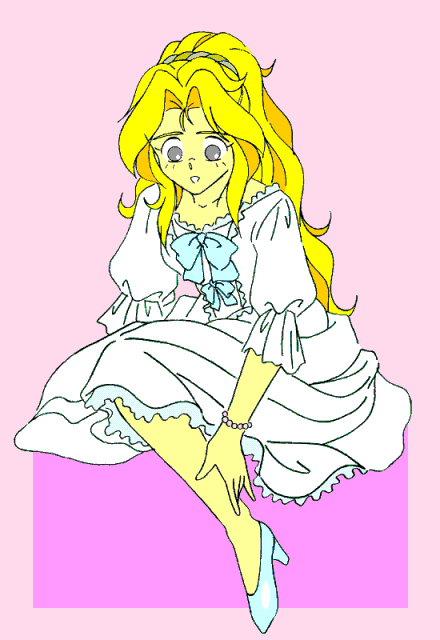

戻る
—— 華代ちゃんシリーズ
——
ガラスの靴
作：BAF
＊「華代ちゃん」の公式設定については、http://www7.plala.or.jp/mashiroyou/kayo_chan00.html
を参照してください。
こんにちは。初めまして。私は真城華代と申します。
最近は本当に心の寂しい人ばかり。そんなみなさんの為に私は活動しています。
まだまだ未熟ですけれども、たまたま私が通りかかりましたとき、お悩みなどございましたら是非ともお申し付け下さい。
私に出来る範囲で依頼人の方のお悩みを露散させてご覧に入れましょう。どうぞお気軽にお申し付け下さいませ。
報酬ですか？ いえ、お金は頂いておりません。お客様が満足頂ければ、それが何よりの報酬でございます。
さて、今回のお客様は……
「はぁ〜っ、これからどうしたものか……」
夕暮れ時、城に繋がっていく石畳の片隅で、身なりのいい初老の男がため息をついていた。
「もう時間がない。もはやこれまでか……」
「ねえ、おじさん。何か悩み事？」
かわいい少女の声に男は顔をあげる。
だがその顔は、すぐに失望の色を見せ……がっくりとうな垂れてしまった。
「失礼ね。私の顔を見たとたんそんな顔するなんて」
まだ幼さの残るその少女が、抗議の声をあげた。
「ごめんな、お嬢ちゃんのせいではないんだが——」
優しげに微笑みかけようとするのだが、男の顔は暗い。
「……ふうん、何か訳ありみたいですね。もしかしたら、あたしが力になれるかも」
少女は男の顔を覗き込み、紙切れを差し出した。
「『ココロとカラダの悩み、お受けいたします。真城華代』？ なんだい？ これは」
男は首をかしげる。
「あたしはセールスレディー。なんでも悩みを言ってみて。……それだけで気が楽になるものよ」
力いっぱい胸をたたく少女。
「ふふふ……そうだな。では少しだけ聞いてもらおうか」
そう言うと、男は少しだけ顔を上げた。「……実は、女性を一人探しているんだよ」
「へえ、それってどんな人？」
「それが全くわからないんだ。だが今日中に見つけないと、私は打ち首になるのだ」
「それは物騒ね。でもどんな人か判らないんじゃ、探しようがないじゃない」
「いや、手がかりならある。これなんだが——」
そう言うと傍らにあった木の箱を開け、中からガラスで出来た靴を取り出した。
「この靴が合う足の娘。それを探しているんだよ」
「あ、そうなんだ。……それなら大丈夫。私に任せて」
少女は夕闇の中駆け出していく。すぐにその姿が見えなくなる。
「あの子、誰か心当たりでも知っているのかな。それだと助かるのだが…………う、ううっ？？」
少女を見送っていた男は、突然体を押さえてその場にうずくまった。
男の顔に変化が起きる。
ごつごつとしていた顔の輪郭がすっきりとした卵形に変わり、顔のしわが伸ばされていく。
立派に蓄えられていた髭も抜け落ち、ブラウンだった髪の毛が美しいブロンドに変わっていく。
ブロンドの髪は見えない手で結い上げられ、豪奢なティアラとバレッタによって飾られる。
体も胸の辺りが膨らみだし、代わりに腰まわりが引き締められていく。黒かった服も、白くレースの飾られたドレスに変わっていく……
気が付けば、そこには見目麗しい少女と化した自分がたたずんでいた。
「こっ、これは……？」
男は自分の変化が信じられず呆然となった。
次に意識を取り戻したのは、別働隊により自分が王子の前に連れ出された時であった。
その時の王子の笑顔は、家来であった男が初めて見るほど優しげであったという……

今回の依頼は簡単でした。“偶然”にも先日、「舞踏会に行きたい」と言ってた男の子に作ってあげた靴と同じ靴が手がかりでしたから。
きっとあのおじさんも、お城で幸せに暮らすことになるでしょう。
本当にめでたしめでたしでした。
今度はあなたの町に行くかもしれません。その時は気軽に悩みを打ち明けてくださいね。
それではまた！
戻る
□ 感想はこちらに □